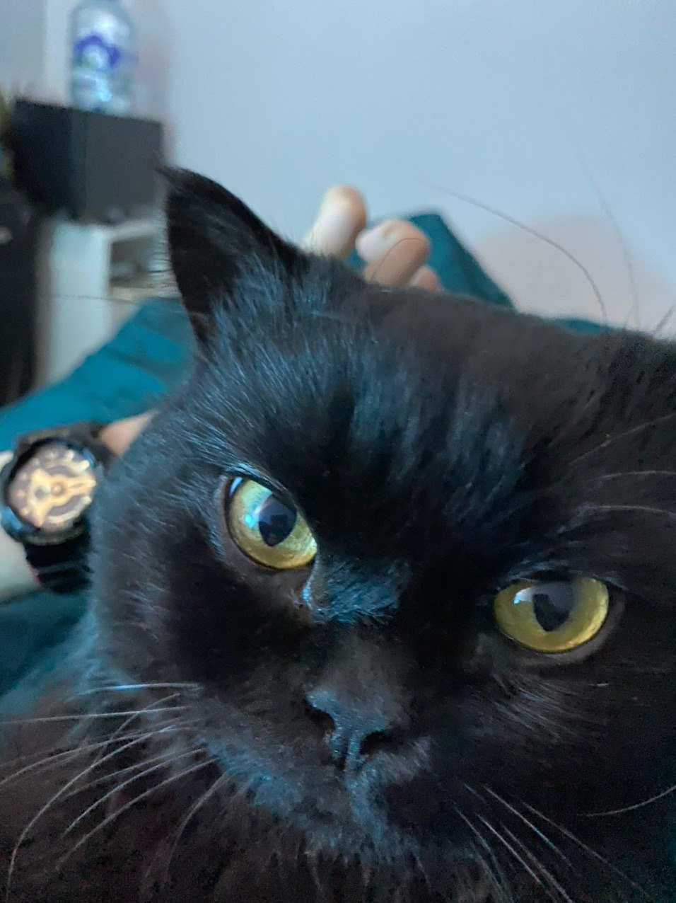
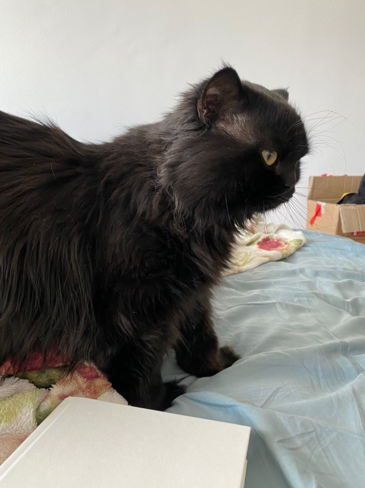
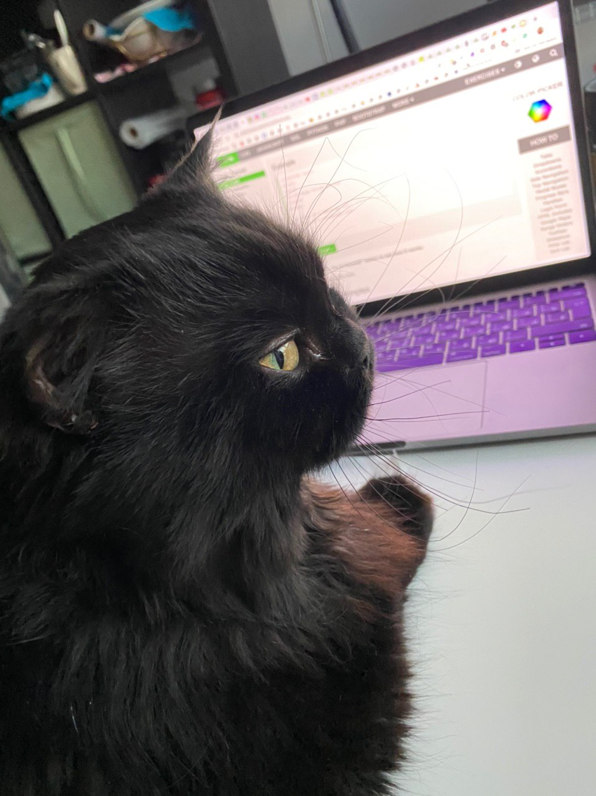
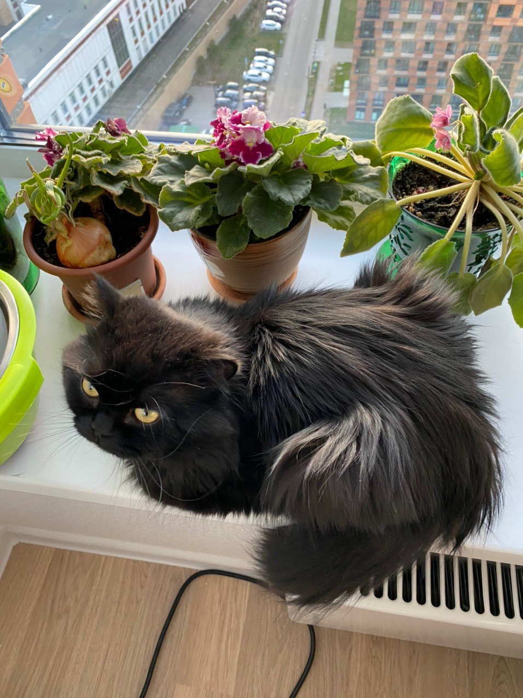

День первый 16.04.2020.

Проснулся сегодня в плохом настроении - миски снова пустые, а рабы по-прежнему глупые. Требования и мольбы не были услышаны, даже неистовые попытки закопать горшок не помогли. Подслушал, что сегодня хотят писать обо мне в какой-то блог - надеюсь хоть это принесет много влажной Шебы.
День третий 18.04.2020.


Вчера ничего не писал - потому что рабы были слишком заняты собой, говорили что-то про 4 года вместе и 4 года какому-то Гусю. Покормили только 1 раз - сушку не получается игнорить - иначе совсем отощаю. Сами на карантине жрут что хотят, а мне как арестанту сушку и миску воды.И ту приходится добывать в джунглях
День четвертый 24.04.2020.

Несколько дней перерыв - рабы что-то переставляют в квартире, моей квартире надо заметить, гоняют меня из одной комнаты в другую. И как всегда, не кормят. Сами жрут разное, и из холодильника и из желтой коробки курьеров - а мне только сушка и вода...
Вчера приезжали еще двуногие рабы - чужие судя по запахам, привезли кучу коробок - но почему-то их не открыли, а сложили в угол и заняли половину кухни. Если это не мне-то кому ? А если мне-то почему они до сих пор не открыты для игр в прятки и вкусного сна? Опять заняли все подоконники, а мне места не осталось, приходится ютиться вот тут - прикладываю фоточку зверст своих рабов над нежной котячьей душой.